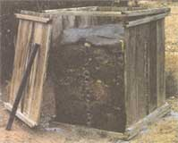
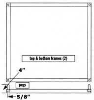
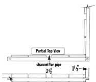
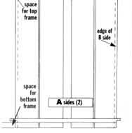
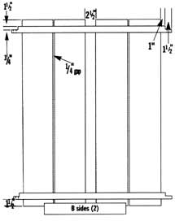
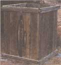

GARDEN & YARD
Never break your back turning compost again.
I work so hard in the garden that I don't want to work hard making compost as well. I'm sure you've seen the traditional composter design with three separate bins. You're supposed to use a fork to turn the compost regularly from one bin into another to aerate it. My alternative bin design takes up less space in the garden and eliminates that little bit of labor, so you can throw your back out doing something more fun, like weeding.
Breaking It Down
The key to leaving your compost in one place is to get air to the center of the pile. I use 2" ABS pipe that I drilled full of holes. The sides of this bin have a 2 1/2" channel for the pipe ends to ride in, leaving them open to draw in air. I lined the channels with 1/2" hardware cloth, folded to fit and stapled to the inside of the sides.
Most of the dimensions in this project are not critical; in fact, you should build it according to the lumber you have on hand. I had some rough redwood fence boards and a few extra 2 x 4 studs; I cut the frame pegs from an old broom handle. Redwood or cedar are the best choices for this project because they're the most rot-resistant. I won't kid you though; you're making a box to hold decomposing vegetable matter and wet dirt. Expect to replace it in 10 or 12 years, no matter what kind of wood you use.
Cutting It Up
Start by cutting all 16 side planks to the same length - about 40". You're going to make two A sides and two B sides as shown in the illustration. The basic difference is that the battens on the B side have to extend past the planks of the A side. You'll also notice that the rabbets on the ends of the battens are oriented so they fit together to form a half lap joint.
Measure the width of four side planks lying side by side; then add 6" to figure the length of your A side battens (2 1/2" for the channel, plus 1/4" between planks, plus 1 1/2" rabbets at each end). Cut four 2 x 4s to the A length and four that are 2" longer for the B side battens; then rip them all into 2 x 2s (actual size 1 1/2" x 1 1/2") so you end up with eight of each.
The next step is to cut the 1 1/2" wide by 3/4" deep rabbets on the ends of the battens. I used dado blades on my radial arm saw and damped a stop block to the fence to make them all the same. Now mark the centers of each rabbet for the holes that fit over the pins.
Pull out four battens of each length to use as the top and bottom frame members. Drill 5/8" holes in the ends for the pins. Drill 3/4" holes in the other eight battens. Cut 4" long pins from a broomstick or a 5/8" dowel and round over the ends.
Putting It Together
To assemble the frames, use Elmer's outdoor wood glue in the rabbets of two A battens and two B battens and all over the bottom half of the pins. Drive the pins in place and check the assembly for square by measuring corner to corner. If the measurements between diagonals are the same, it's square. I further reinforced this joint by driving a 1 3/4" screw into the pin at an angle that captures all three pieces.
Now assemble the A sides by laying two of the shorter battens on the floor with their rabbets facing the same direction. Lay one side board across the end of the battens, aligning it with the shoulder of the rabbet. Use a framing square to help you position the battens 1 1/2" from the ends of the board and also perpendicular to it.
Attach the board to the battens with 2" deck screws. Lay another board at the opposite end of the battens and repeat this procedure. Now position the two middle planks and screw them to the battens.
To assemble the B sides you go through the same procedure, except this time position the two outer planks 1" back from the shoulder of the rabbets. After attaching the hardware cloth to the channels, you're ready to set this thing up.
Lay one frame on the ground with the pins up. Set the two B sides in place with their rabbets up; then position the A sides with their rabbets down. The planks fit down inside the frame. Capture the sides with the top frame, fitting its pins down into the batten holes.
Measure the distance between the channels of opposite sides and cut the air pipes just a bit short so they don't get hung up on the hardware cloth. You're going to need two different lengths. I was only able to buy ABS pipe in 20' lengths; you'll need about 30' worth of air pipes. Cut an equal number of both lengths for your compost bin, and then drill 'em full of holes. If you have a drill press it goes pretty fast. Cut the leftover pipe into 16" to 18" lengths and use them as watering tubes next time you plant trees.
The last step is to cut a square of carpet scrap (easily retrieved from an installer's dumpster) to fit down inside the bin. This will keep the smell down and help retain moisture.
My Basic Compost Recipe
Throw in kitchen scraps; yard trimmings; manure from rabbits, chickens, and horses (but none from meat eaters such as dogs and cats); wood shavings, sawdust, and ashes from your woodstove. Every couple of inches or so, lay one of the air pipes across the pile and then throw on a layer of dirt. Water your compost whenever you think of it - but certainly whenever you rinse out the kitchen scrap bucket.
|
 |
 |
 |
|
 |
 |
 |